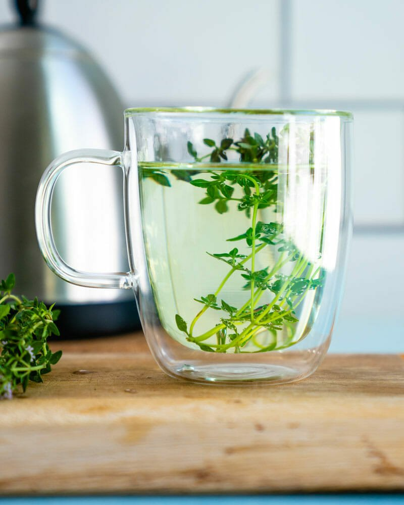
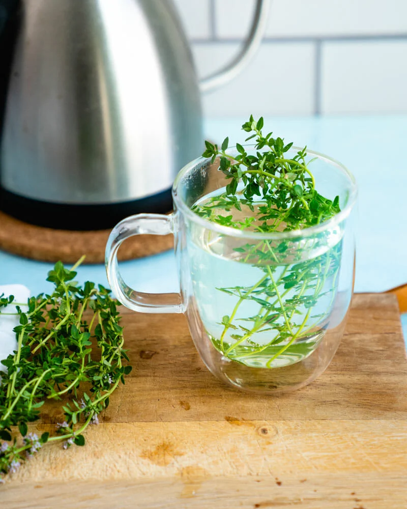

Tranquil Thyme Tea

Description
Did you know you can make tea using fresh herbs? Thyme tea is a great way to use your extra thyme to make tea, therefore it is recommended that you make this recipe in the summer when your garden is overflowing with extra herbs. However, you can still make it during winter, just make sure to stock up on some fresh thyme from your local store or market! Thyme tea is very nice, and tastes both fragrant and satisfying. It’s a fun way to make your own tea, and can make drinking eater a more exciting experience. Here’s how to make it!
How Much Thyme Will It Take?
5 Minutes
Ingredients
- Boiling Water
- 8 To 10 Fresh Thyme Sprigs: Either Standard Or Lemon Thyme
Steps
- Boil: Bring a pot of water to a boil. It is recommended to use an electric tea kettle, that can also be used for morning coffee.
- Wash: Wash the thyme thoroughly.
- Harvest Herbs: Place the thyme sprigs into a mug; 8 to 10 fresh sprigs are recommended for the best taste.
- Steep: Pour on the water. The exact quantity doesn’t really matter: just make sure to fill up the mug! Allow it to stand for 5 minutes, then enjoy!